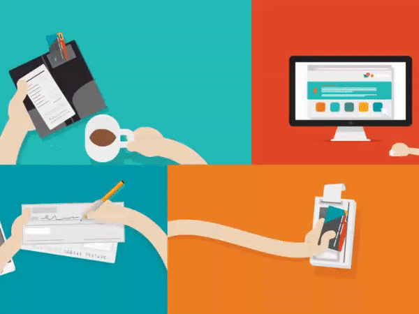

Banking
Ict has been engaged in many ways when it comes to banking. The way they used to maintain other bank branches records and transactions are extraordinary. Because in every bank there is an advanced network connection which is being managed by well-qualified ICT team. Therefore, customers are able to do their transactions regardless of their locations. There are huge number of Automated teller machines (ATM) in the world with 24/7 accessibility to make transactions.
When considering previous centuries, it is time-consuming when managing a bank account, as there were no online banking facilities. But due to the revolution of the information technology banking has become very easy thing in people’s life. In the present days, most of people tend to use online banking facility rather than visiting bank branches. This service is efficient and fast because there is no need to stay in long queues to pay bills. Thus online banking provides wider payment options to the customers from their comfort zone.
In my experience, online banking is more flexible and I have used it many times. However, sometimes I used atm machines to withdraw money. The main reason that I used online banking is that it allows us to make a transaction to anyone within a few seconds easily. Banks also provide a mobile application to their users so it makes much more efficient to the users.